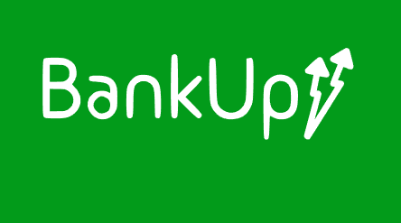

Finalidade do Projeto
O projeto que faço parte, como desenvolvedor Back-End, e Scrum Master da minha equipe, que visa pagamento automático de contas. Com o objetivo de criar uma aplicação de uma FINTECH que será um banco digital focado em automação de pagamentos de contas, com integração via Whatsapp e e-mail, garantindo praticidade para o usuário e notificações tanto para o cliente quanto para a pessoa cadastrada para pagar contas.
Tecnologias Utilizadas

Focando no desenvolvimento Back-end, meu e de minha equipe, as tecnologias foram JavaScript como linguagem de programação, NodeJS como servidor, PostgreSQL como base de dados, tecnologias de rotas e API rest, Docker para automação de dependências, Postman para confimação de APIs e GitHub para versionamento de projeto.
Considerações Finais
Com o resultado parcial do projeto, com integração já com todas as outras equipes, de Front-End e Infraestrutura, esse projeto aprimorou minha habilidade como desenvolvedor, arquiteto e engenheiro de software, trabalhando sempre com padrões e técnicas já confirmadas pelo mercado. Além de contribuir para meu desenvolvimento em trabalho com equipe, no qual foi colocado como Scrum Master.